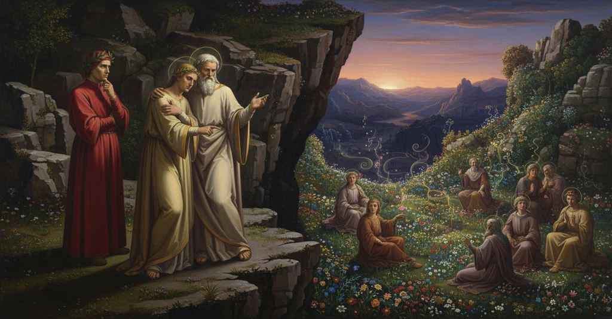

Purgatorio — Canto 7

1
Poscia che l’accoglienze oneste e liete
After the honest and happy welcomes
丁寧で喜ばしい歓迎が
2
furo iterate tre e quattro volte,
were repeated three and four times,
三度も四度も繰り返された後、
3
Sordel si trasse, e disse: «Voi, chi siete?».
Sordello drew back, and said: “You, who are you?”.
ソルデッロは身を引き、「貴方がたは何者か？」と言った。
4
«Anzi che a questo monte fosser volte
“Before to this mountain were turned
「この山に、神のもとへ登るに
5
l’anime degne di salire a Dio,
the souls worthy to ascend to God,
ふさわしい魂たちが向けられるよりも前に、
6
fur l’ossa mie per Ottavian sepolte.
my bones were buried by Octavian.
私の骨はオクタウィアヌスによって葬られた。
7
Io son Virgilio; e per null’ altro rio
I am Virgil; and for no other sin
私はウェルギリウス。そして、他のいかなる罪でもなく、
8
lo ciel perdei che per non aver fé».
did I lose heaven than for not having faith.”
信仰を持たなかったがゆえに天国を失ったのだ」。
9
Così rispuose allora il duca mio.
Thus my guide then answered.
そのとき、私の導き手はそう答えた。
10
Qual è colui che cosa innanzi sé
As is he who a thing before him
目の前に突然、驚くべきものを
11
sùbita vede ond’ e’ si maraviglia,
suddenly sees at which he marvels,
見て、驚き、
12
che crede e non, dicendo «Ella è . . . non è . . . »,
who believes and does not, saying “It is . . . it is not . . .,”
「そうだ…いや違う…」と言いながら、信じたり信じなかったりする者のように、
13
tal parve quelli; e poi chinò le ciglia,
such did he seem; and then he lowered his brow,
その者はそのように見えた。そして眉を下げ、
14
e umilmente ritornò ver’ lui,
and humbly returned toward him,
謙虚に彼の方へ戻り、
15
e abbracciòl là ’ve ’l minor s’appiglia.
and embraced him where the lesser one clings.
身分の低い者が抱きつくように、その足元を抱いた。
16
«O gloria di Latin», disse, «per cui
“O glory of the Latins,” he said, “through whom
「おお、ラテン人の栄光よ」と彼は言った。「貴方によって
17
mostrò ciò che potea la lingua nostra,
our language showed what it could do,
我らが言葉がその力を示したのだ、
18
o pregio etterno del loco ond’ io fui,
o eternal honor of the place from which I came,
おお、私がいた場所の永遠の誉れよ、
19
qual merito o qual grazia mi ti mostra?
what merit or what grace shows you to me?
いかなる功績、いかなる恩寵が貴方を私に示してくれたのか？
20
S’io son d’udir le tue parole degno,
If I am worthy to hear your words,
もし私が貴方の言葉を聞くに値するならば、
21
dimmi se vien d’inferno, e di qual chiostra».
tell me if you come from Hell, and from what cloister.”
教えてほしい、貴方は地獄から来たのか、そしてどの圏から来たのかを」。
22
«Per tutt’ i cerchi del dolente regno»,
“Through all the circles of the sorrowful kingdom,”
「悲しみの王国のすべての圏を抜けて」
23
rispuose lui, «son io di qua venuto;
he answered him, “have I come from here;
と彼は答えた、「私はここへ来たのだ。
24
virtù del ciel mi mosse, e con lei vegno.
power from heaven moved me, and with it I come.
天の徳が私を動かし、それと共に私は来る。
25
Non per far, ma per non fare ho perduto
Not for doing, but for not doing have I lost
行ったことによってではなく、行わなかったことによって私は失ったのだ、
26
a veder l’alto Sol che tu disiri
the sight of the high Sun that you desire
貴方が望む高き太陽を見ること、
27
e che fu tardi per me conosciuto.
and who was too late by me known.
そしてそれは私には知るのが遅すぎたものを。
28
Luogo è là giù non tristo di martìri,
A place is down there not sad with torments,
下界には場所がある、そこは拷問で悲しいのではなく、
29
ma di tenebre solo, ove i lamenti
but with shadows only, where the laments
ただ闇ばかりで、そこでは嘆きは
30
non suonan come guai, ma son sospiri.
do not sound like wails, but are sighs.
苦悶の叫びとして響かず、ただ溜息なのだ。
31
Quivi sto io coi pargoli innocenti
There I stay with the innocent infants
そこで私は無垢な幼子たちと共にいる、
32
dai denti morsi de la morte avante
bitten by the teeth of death before
死の歯に噛み砕かれた者たち、
33
che fosser da l’umana colpa essenti;
they were from human guilt made exempt;
人間の罪から免れる前に。
34
quivi sto io con quei che le tre sante
there I stay with those who the three holy
そこで私は、三つの聖なる
35
virtù non si vestiro, e sanza vizio
virtues did not clothe themselves with, and without vice
徳を身にまとわず、そして悪徳なくして
36
conobber l’altre e seguir tutte quante.
knew the others and followed them all.
他の徳を知り、そのすべてに従った者たちと共にいる。
37
Ma se tu sai e puoi, alcuno indizio
But if you know and can, some indication
だが、もし貴方が知っていて、できるのなら、何らかの印を
38
dà noi per che venir possiam più tosto
give us by which we may come more quickly
我らに与えてほしい、それによって我らがより早く行けるように、
39
là dove purgatorio ha dritto inizio».
to where Purgatory has its true beginning.”
煉獄が正しく始まる場所へ」。
40
Rispuose: «Loco certo non c’è posto;
He answered: «No certain place is set for us;
彼は答えた、「ここに定まった場所はありません。
41
licito m’è andar suso e intorno;
it is licit for me to go up and around;
上へ、そして周りを行くことは私に許されています。
42
per quanto ir posso, a guida mi t’accosto.
as far as I can go, I join you as a guide.
私が行ける限り、案内役としてあなたに寄り添いましょう。
43
Ma vedi già come dichina il giorno,
But see now how the day declines,
しかし、すでに日が傾いているのがお分かりでしょう、
44
e andar sù di notte non si puote;
and to go up by night is not possible;
そして、夜に上へ行くことはできないのです。
45
però è buon pensar di bel soggiorno.
therefore it is good to think of a fair resting-place.
それゆえ、心地よい滞在場所を考えるのが良いでしょう。
46
Anime sono a destra qua remote;
There are souls on the right here, set apart;
こちらの右手に、離れたところに魂たちがおります。
47
se mi consenti, io ti merrò ad esse,
if you allow me, I will lead you to them,
もしお許しくださるなら、彼らのもとへお連れしましょう、
48
e non sanza diletto ti fier note».
and not without delight they will be known to you».
そして、喜びなくして知られることはないでしょう」。
49
«Com’ è ciò?», fu risposto. «Chi volesse
«How is this?», was the reply. «He who might wish
「それはどういうことか？」と答えがあった。「もし誰かが望んでも
50
salir di notte, fora elli impedito
to climb by night, would he be impeded
夜に登ることを、他の者によって妨げられるのか、
51
d’altrui, o non sarria ché non potesse?».
by another, or would he not climb because he could not?».
それとも、力がないゆえに登れないのでしょうか？」。
52
E ’l buon Sordello in terra fregò ’l dito,
And the good Sordello on the ground drew with his finger,
そして、善良なソルデッロは地面に指をこすりつけ、
53
dicendo: «Vedi? sola questa riga
saying: «See? this line alone
言った、「ご覧なさい。ただこの一本の線を
54
non varcheresti dopo ’l sol partito:
you would not cross after the sun has departed:
太陽が去った後には、あなたは越えられないでしょう。
55
non però ch’altra cosa desse briga,
not that anything else would give trouble,
とはいえ、何か他のものが妨げるのではなく、
56
che la notturna tenebra, ad ir suso;
than the nocturnal darkness, to going up;
上へ行くには、夜の闇そのものが、
57
quella col nonpoder la voglia intriga.
that with powerlessness obstructs the will.
その無力さをもって、意志を絡めとるのです。
58
Ben si poria con lei tornare in giuso
One could well with it return below
闇と共に下へ戻ったり、
59
e passeggiar la costa intorno errando,
and walk the slope, wandering around,
岸辺をさまよい歩き回ることはできます、
60
mentre che l’orizzonte il dì tien chiuso».
while the horizon holds the day enclosed».
地平線が昼を閉ざしている間は」。
61
Allora il mio segnor, quasi ammirando,
Then my lord, as if admiring,
その時、わが主は、ほとんど感嘆したように、
62
«Menane», disse, «dunque là ’ve dici
«Lead us,» he said, «then, to where you say
「では、我らを導きたまえ」と言った、「あなたが言うところの
63
ch’aver si può diletto dimorando».
that one can have delight in staying».
滞在して喜びを得られる場所へ」。
64
Poco allungati c’eravam di lici,
We had moved a short way from there,
我らがそこからわずかに進んだ時、
65
quand’ io m’accorsi che ’l monte era scemo,
when I perceived that the mountain was hollowed out,
私は、山がえぐられていることに気づいた、
66
a guisa che i vallon li sceman quici.
in the way that valleys hollow them out here.
ちょうど谷がこの地の山腹をえぐるように。
67
«Colà», disse quell’ ombra, «n’anderemo
«There,» said that shade, «we will go
「あそこへ」とその影は言った、「我らは行きましょう、
68
dove la costa face di sé grembo;
where the slope makes of itself a lap;
山腹が自ら懐をなしている場所へ。
69
e là il novo giorno attenderemo».
and there we will await the new day».
そして、そこで新たな日を待ちましょう」。
70
Tra erto e piano era un sentiero schembo,
Between steep and level was a winding path,
険しい所と平らな所の間に、曲がった小道があり、
71
che ne condusse in fianco de la lacca,
that led us to the side of the hollow,
それが我らを窪地の脇へと導いた、
72
là dove più ch’a mezzo muore il lembo.
there where the rim dies away more than halfway.
その縁が半ば以上も消え失せるところへ。
73
Oro e argento fine, cocco e biacca,
Gold and fine silver, crimson and white lead,
金と純銀、臙脂と白鉛、
74
indaco, legno lucido e sereno,
indigo, wood bright and clear,
藍、輝き澄んだ木、
75
fresco smeraldo in l’ora che si fiacca,
fresh emerald at the hour it is split,
砕かれた瞬間の瑞々しいエメラルドも、
76
da l’erba e da li fior, dentr’ a quel seno
by the grass and the flowers, within that bosom
その窪みの中の草や花々に
77
posti, ciascun saria di color vinto,
placed, each would be surpassed in color,
置かれれば、その色において悉く打ち負かされるだろう、
78
come dal suo maggiore è vinto il meno.
as the lesser is surpassed by its greater.
小なるものが大なるものに打ち負かされるように。
79
Non avea pur natura ivi dipinto,
Not only had nature painted there,
自然はただそこに彩っただけではなかった、
80
ma di soavità di mille odori
but with the sweetness of a thousand scents
むしろ千の香りの甘美さで、
81
vi facea uno incognito e indistinto.
it made there one unknown and blended.
未知にして名状しがたい一つの芳香を創り出していた。
82
‘Salve, Regina’ in sul verde e ’n su’ fiori
'Salve, Regina,' on the green and on the flowers,
「サルヴェ・レジーナ」を、緑の草と花の上で
83
quindi seder cantando anime vidi,
I then saw souls sitting and singing,
そこで座して歌う魂たちを私は見た、
84
che per la valle non parean di fuori.
who from outside the valley were not apparent.
彼らは谷間のため外からは見えなかったのだ。
85
«Prima che ’l poco sole omai s’annidi»,
«Before the little sun now nests,»
「わずかな太陽がもはや巣くう前に」
86
cominciò ’l Mantoan che ci avea vòlti,
began the Mantuan who had turned us,
我らを導いたかのマントヴァ人は語り始めた、
87
«tra color non vogliate ch’io vi guidi.
«do not wish that I guide you among them.
「あの者たちの間へ、私がお導きすることは望まれぬように。
88
Di questo balzo meglio li atti e ’ volti
From this ledge, better their acts and faces
この岩棚からの方が、彼ら皆の仕草と顔つきを
89
conoscerete voi di tutti quanti,
you will recognize of all of them,
あなた方はより良く見分けることができるでしょう、
90
che ne la lama giù tra essi accolti.
than down in the vale received among them.
下の窪地で彼らの間に迎え入れられるよりも。
91
Colui che più siede alto e fa sembianti
That one who sits highest and makes semblances
最も高く座り、そして様子を見せているのは
92
d’aver negletto ciò che far dovea,
of having neglected what he ought to have done,
為すべきことを怠ったかのような、
93
e che non move bocca a li altrui canti,
and who does not move his mouth to the others' songs,
そして他の者たちの歌に口を合わせない男、
94
Rodolfo imperador fu, che potea
was Emperor Rudolf, who could have
皇帝ルドルフであった、彼は癒すことができたはずだった
95
sanar le piaghe c’hanno Italia morta,
healed the wounds that have left Italy dead,
イタリアを死に至らしめた数々の傷を、
96
sì che tardi per altri si ricrea.
so that late by others it is revived.
そのため他者によって癒されるのは遅きに失する。
97
L’altro che ne la vista lui conforta,
The other who in aspect comforts him,
彼を慰めるかのように見えるもう一人の男は、
98
resse la terra dove l’acqua nasce
ruled the land where the water is born
水が生まれる地を治めていた
99
che Molta in Albia, e Albia in mar ne porta:
that the Vltava bears to the Elbe, and the Elbe to the sea:
モルタヴァはエルベへ、エルベは海へとそれを運ぶ。
100
Ottacchero ebbe nome, e ne le fasce
Ottokar was his name, and in his swaddling clothes
オッタケーロという名で、そして襁褓のうちに
101
fu meglio assai che Vincislao suo figlio
he was far better than Wenceslaus his son,
息子ヴィンチスラオよりもずっとましであった
102
barbuto, cui lussuria e ozio pasce.
bearded, whom lust and idleness fatten.
髭面の、色欲と怠惰に肥え太った。
103
E quel nasetto che stretto a consiglio
And that small-nosed one who in close counsel
そしてあの小鼻の男は、密議を凝らしているように見える
104
par con colui c’ha sì benigno aspetto,
seems with him who has so benign an aspect,
あの優しい顔つきの男と、
105
morì fuggendo e disfiorando il giglio:
died fleeing and deflowering the lily:
逃げるさなかに死に、百合の花を辱めた。
106
guardate là come si batte il petto!
look there how he beats his breast!
見よ、あそこを、いかに彼が胸を打っているかを！
107
L’altro vedete c’ha fatto a la guancia
The other you see who has made for his cheek,
もう一人の男を見よ、彼は頬に
108
de la sua palma, sospirando, letto.
of his palm, sighing, a bed.
溜息をつきながら、手のひらを寝床としている。
109
Padre e suocero son del mal di Francia:
Father and father-in-law are they of the pest of France:
彼らはフランスの災いの父と舅なのだ。
110
sanno la vita sua viziata e lorda,
they know his vicious and squalid life,
彼の堕落し汚れた生涯を知っている、
111
e quindi viene il duol che sì li lancia.
and from this comes the grief that so pierces them.
それゆえに彼らをかくも苛む悲しみが来る。
112
Quel che par sì membruto e che s’accorda,
That one who seems so stalwart and who harmonizes,
あの頑健そうに見え、そして調子を合わせている男は、
113
cantando, con colui dal maschio naso,
singing, with him of the manly nose,
歌いながら、あの鷲鼻の男と、
114
d’ogne valor portò cinta la corda;
of every virtue wore the belt;
あらゆる武勇の帯を締めていた。
115
e se re dopo lui fosse rimaso
and if the young man who sits behind him
そしてもし彼の後に王として残っていたのが
116
lo giovanetto che retro a lui siede,
had remained king after him,
彼の後ろに座る若者であったなら、
117
ben andava il valor di vaso in vaso,
virtue would have passed well from vessel to vessel,
まさに武勇は器から器へと受け継がれたであろう、
118
che non si puote dir de l’altre rede;
which cannot be said of the other heirs;
他の世継ぎたちについてはそうは言えない。
119
Iacomo e Federigo hanno i reami;
James and Frederick have the realms;
ハイメとフェデリーコが王国を持つが、
120
del retaggio miglior nessun possiede.
of the better heritage neither possesses any.
より良き遺産は誰も所有していない。
121
Rade volte risurge per li rami
Rarely does human probity
稀にしか枝々を伝って蘇らないのだ
122
l’umana probitate; e questo vole
rise up through the branches; and He who gives it
人間の徳というものは。そしてこれを望むのは
123
quei che la dà, perché da lui si chiami.
wills this, so that it may be called for from Him.
それを与える方であり、人が彼にそれを求めるようにするためだ。
124
Anche al nasuto vanno mie parole
To the large-nosed one also my words apply,
あの鷲鼻の男にも私の言葉は向けられる
125
non men ch’a l’altro, Pier, che con lui canta,
no less than to the other, Peter, who sings with him,
彼と共に歌うもう一人、ピエールに劣らず、
126
onde Puglia e Proenza già si dole.
for whom Apulia and Provence now grieve.
それゆえにプーリアとプロヴァンスはすでに嘆いている。
127
Tant’ è del seme suo minor la pianta,
His plant is as much inferior to its seed,
彼の種から生えた苗木はそれほど劣っている、
128
quanto, più che Beatrice e Margherita,
as, more than Beatrice and Margaret,
ベアトリーチェやマルゲリータ以上に、
129
Costanza di marito ancor si vanta.
Constance still boasts of her husband.
コスタンツァが今なお夫を誇るほどに。
130
Vedete il re de la semplice vita
See the king of the simple life
質素な生活を送った王を見よ
131
seder là solo, Arrigo d’Inghilterra:
sitting there alone, Henry of England:
あそこに一人座っている、イングランドのヘンリーを。
132
questi ha ne’ rami suoi migliore uscita.
this one has in his branches a better issue.
この者はその枝々により良き実りを得た。
133
Quel che più basso tra costor s’atterra,
That one who sits lowest among them,
この者たちの中で最も低くうずくまり、
134
guardando in suso, è Guiglielmo marchese,
looking upward, is William the Marquess,
上を見上げているのは、侯爵グリエルモだ、
135
per cui e Alessandria e la sua guerra
for whom both Alessandria and his war
彼とアレッサンドリア、そしてその戦のゆえに
136
fa pianger Monferrato e Canavese».
make Montferrat and Canavese weep».
モンフェッラートとカナヴェーゼは涙するのだ」。